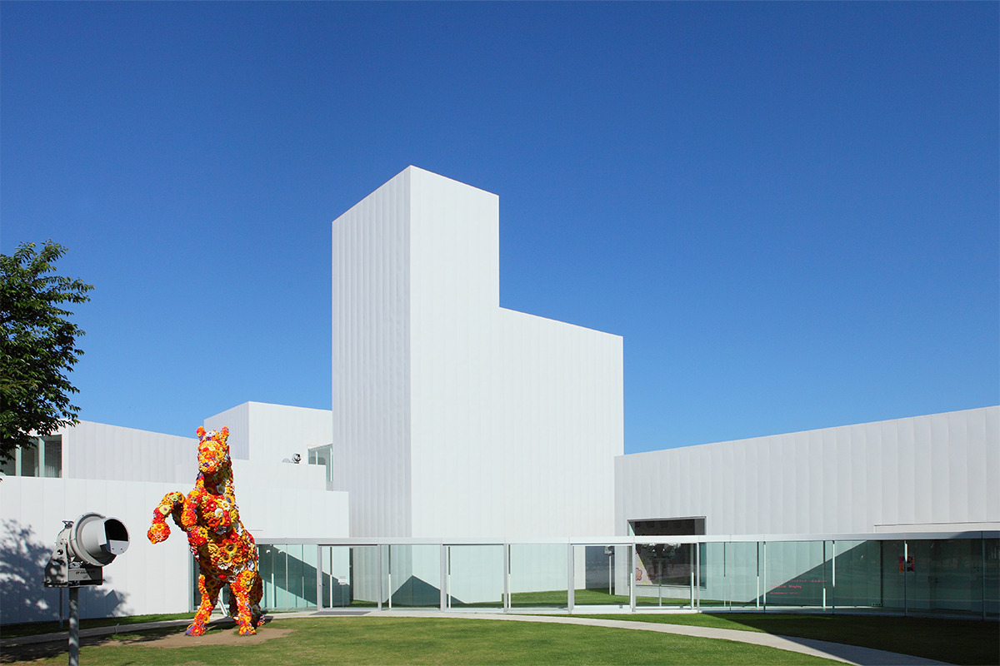
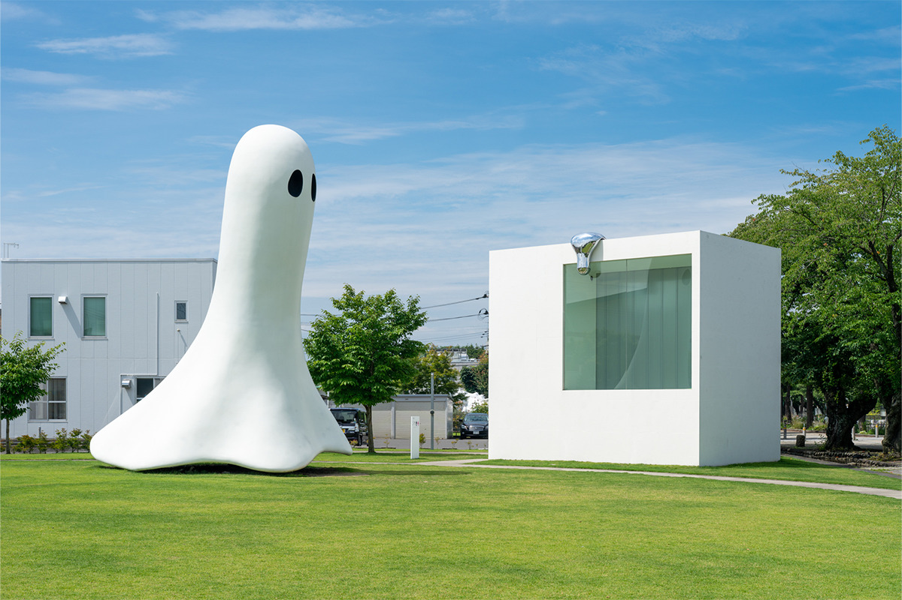
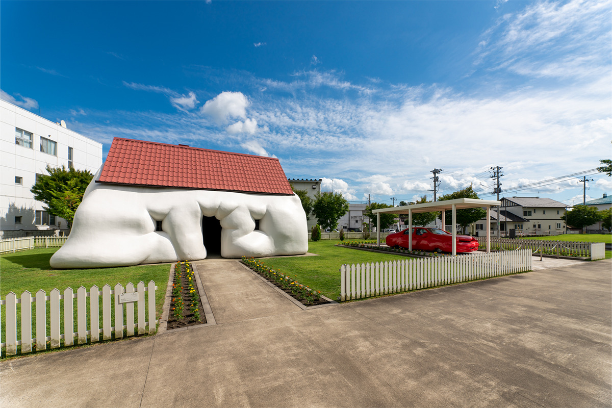
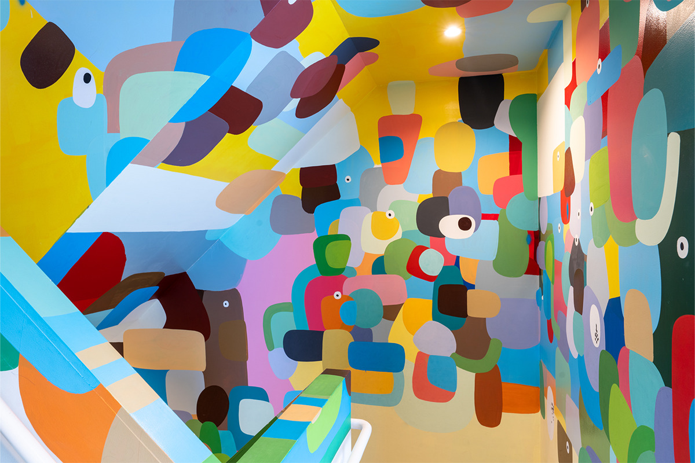
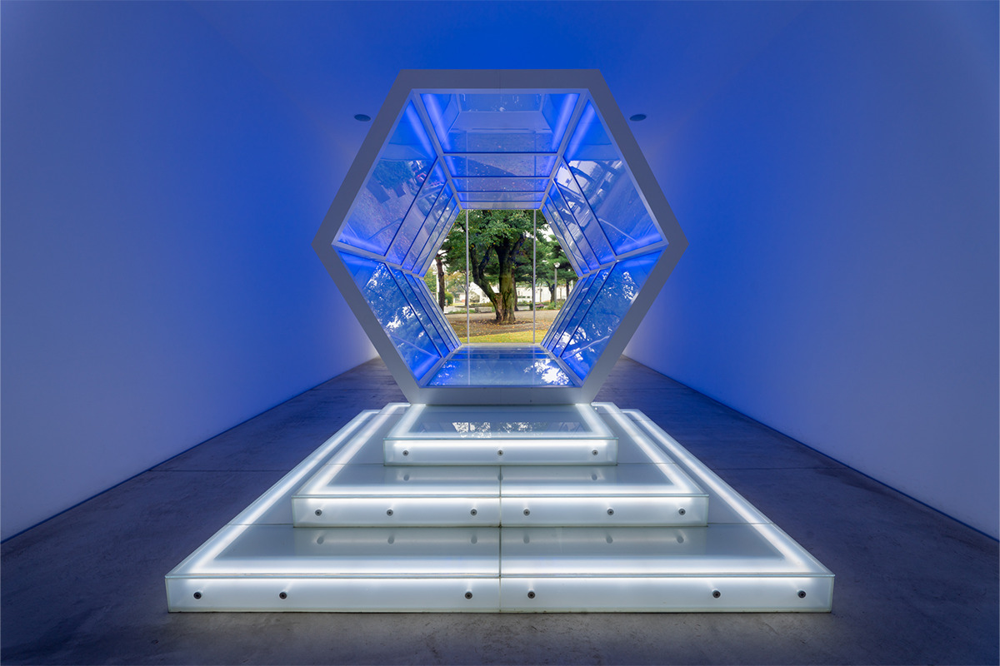
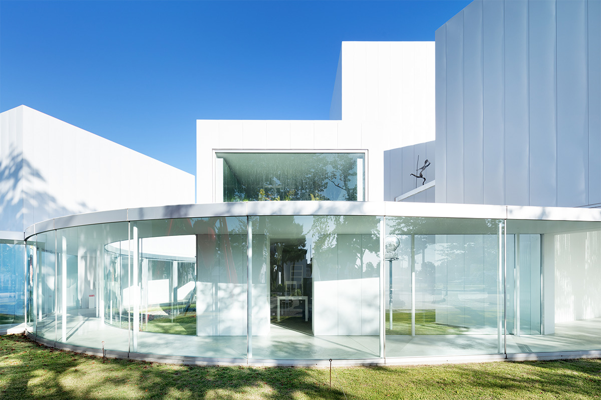
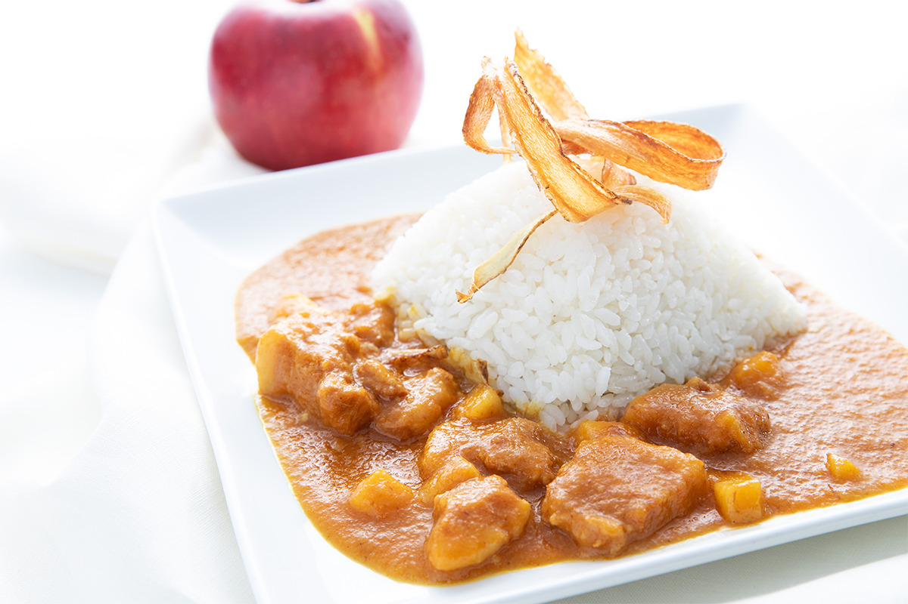
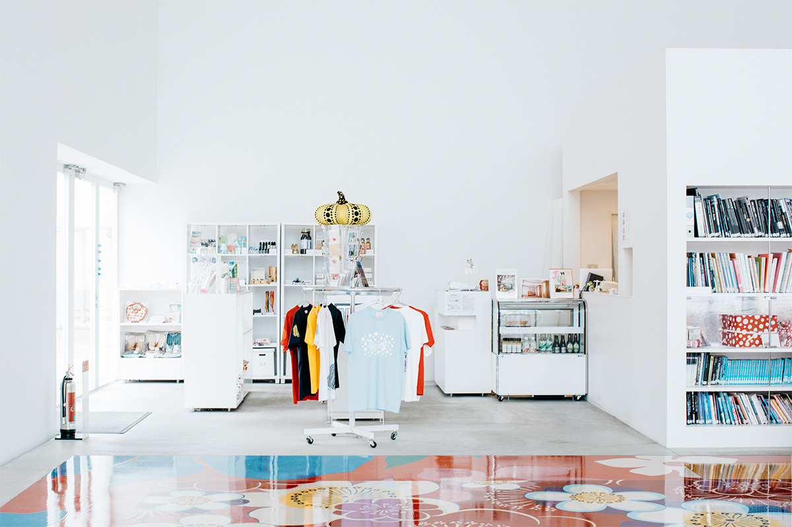
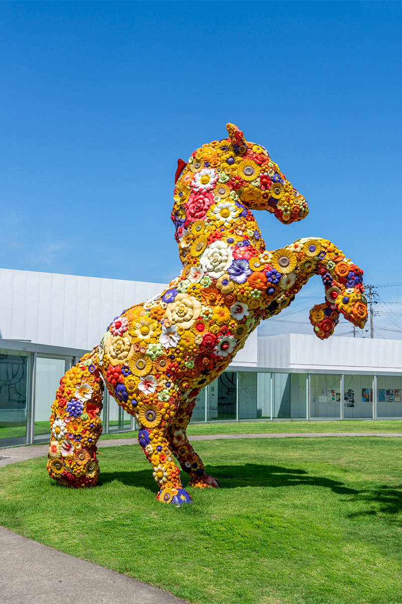

Префектура Аомори · Товада · искусство
Художественный центр современного искусства Товады: музей из белых коробок, открытый улице

В Товаде, городе у подножия гор Хаккода, современное искусство выходит прямо на главную улицу. Художественный центр современного искусства Товады открылся в 2008 году, и многие его работы можно увидеть только здесь.
Город
Музей как часть улицы
Город Товада на юге префектуры Аомори лежит у подножия массива Хаккода, в кольце хребтов Южной Хаккоды. Его парадная улица Кантёгай-дори, вдоль которой стоят городские учреждения, стала площадкой для проекта Arts Towada. Его идея в том, чтобы представить весь город как один большой музей.
Художественный центр современного искусства Товады (Towada Art Center) открылся на этой улице в 2008 году как главная площадка проекта. Через искусство город рассказывает о своей истории, природе и силе местных жителей и хочет, чтобы Товаду знали как «город искусства» и в Японии, и за её пределами.

Архитектура
Семнадцать коробок и стеклянные галереи
Здание спроектировал Рюэ Нисидзава. Вместе с Кадзуё Сэдзимой он руководит архитектурным бюро SANAA. Нисидзава родился в Токио в 1966 году, в 1995 году вместе с Сэдзимой основал SANAA, а в 1997 году открыл собственное бюро. Среди его наград Притцкеровская премия.
Музей занимает участок около 4000 квадратных метров, и на нём стоят 17 коробок разного размера. Каждый выставочный зал задуман как отдельный «дом для искусства», а между собой их связывают стеклянные коридоры, открытые в сторону улицы. Граница между городом и музеем почти исчезает: кажется, что музей продолжает улицу.
Каркас стальной, стены обшиты листами гальвалюма. Если подойти ближе, там, где под обшивкой проходят горизонтальные рейки, заметен лёгкий рельеф, но листы уложены гладко, и издалека каждая коробка читается как единый белый объём.

Залы
Одна коробка, одна работа
Главная черта музея следует из той же идеи «дома для работы». Есть коробки высотой примерно в два этажа, а есть такие, куда помещается лишь несколько человек. Переходя из зала в зал, будто попадаешь каждый раз в другой музей.


Работы внутри и снаружи видны и с улицы, поэтому, просто проходя по Кантёгай-дори, вы уже оказываетесь в музее. Работает это и в обратную сторону: изнутри город кажется частью экспозиции. Работы спрятаны не только в залах: поищите их под ногами и на стенах.
Галереи
Стекло между залами
Залы разного размера связывает остеклённая галерея: тонкая крыша лежит на тонких колоннах. Снаружи от этого каждая коробка будто выступает сама по себе. Из галереи хорошо видны и работы, расставленные под открытым небом.

Кафе и магазин
cube
Кафе и магазин cube назвали в честь белых квадратных корпусов музея. В кафе подают блюда из местных продуктов.

В магазине продают собственные товары музея и вещи, сделанные дизайнерами для музейных магазинов, а ещё ремесленные изделия Товады, работы местных мастеров и продукты из окрестностей. Из них получаются хорошие сувениры и подарки на память о поездке.

Архитектура и город здесь работают вместе, и современное искусство смотрится в Товаде по-новому. Если поедете в Аомори, загляните сюда.

Художественный центр современного искусства Товады
- Адрес
- префектура Аомори, Товада, Ниси-Нибантё, 10-9
- Телефон
- +81 176-20-1127
- Часы работы
- 9:00–17:00 (вход до 16:30), кафе и магазин cube так же (последний заказ в кафе в 16:30)
- Выходные
- понедельник (если понедельник праздничный, то следующий день), новогодние праздники
- Цены / Вход
- взрослые 1800 иен (когда временная выставка закрыта, 1000 иен), старшеклассники и младше бесплатно; жителям Товады при предъявлении документа с адресом скидка 200 иен
Фото: Куния Оямада, Такуми Ота.